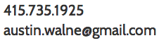
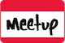

Austin Walne

Summary
- 5 years product management experience in technology marketing environments
- Served as Product Owner with Scrum, Kanban, and Lean style Agile development teams. (CSPO - Scrum Alliance)
- Extensive experience with Marketing Analytics, Business Intelligence, and Web Development
- Conceptualized, built, and launched a first of its kind decentralized phone communcation tool allowing a top-tier '08 presidental campaign's supporters to self organize among peers
- Active participant in SF Bitcoin, Ethereum, and other distributed system communities
Mindjet | Product Manager - Customer Acquisition & Monetization — Nov 2012-Present
- Manage delivery of all new functionality for global customer facing web properties at Mindjet
in US, UK, DE, FR, EU, JP, & AU locales including: corporate website, eCommerce/back-end
provisioning system, blog, and other digital marketing assets
- Product Owner on two Agile teams: Scrum (eCommerce & provisioning system) and Kanban (Website)
San Francisco Agile Marketing Meetup | Organizer — Sept 2012-Present
- SF Agile Marketing began with 42 members in Oct '12 and has grown to over 1,900 today (largest marketing community in SF Bay area)
- Previous speakers include:
- The team includes:
Openstudy | Director of Marketing/Product — April 2012-November 2012
- Responsible for end-to-end development of user-facing products and their related marketing for the company’s online social learning business used monthly by over 514k students from over 2k schools in 180 countries
- Served as Product Owner with an agile team of one designer and four developers to build and launch a student crowd-funding platform called Catapult
- Managed OpenStudy's participation in MOOC partnership with MIT, Codecademy, & P2PU
Goba | Product Manager & Business Development — Dec 2010-April 2012
- Led business development and product for startup that mobilized users’ friends for in-person activities
- Managed stakeholder input while driving concurrent development of iOS, Android, and mobile web products; efforts led to partnership with SingTel (world’s second largest mobile carrier)
- Signed partnerships with Vanderbilt University, Lipscomb University & Athletics Dept, a nationwide health system, a leading ACO (Accountable Care Organization), and a Nationwide Series NASCAR Team
Independent Contractor | Campaign Consultant — June 2010-Dec 2010
- Contributed technology, data analysis, and organizational expertise to three successful top-tier state legislative campaigns utilizing micro-targeting, adaptive VoIP voter contact systems, and online action tools
- Led prospective voter analysis efforts, combining survey data mining, propensity mapping, and behavioral targeting to compile effective universes used by multiple campaigns
FSi | Account Executive | June 2009-Dec 2010
- Increased net profit 11% of the firm's largest account (Fortune 50 client that represented over 35% of the firm's profit) while managing three customer service representatives
University of Tennessee | Student | August 2008-May 2009
- Returned to University to finish degree after working in Washington DC
North Bridge Communications | Assistant Account Executive | Feb 2008-August 2008
- Developed and executed digital, technology focused, strategic communication and grassroots lobbying campaigns for public affairs clients including: a publicly traded energy corporation, agriculture trade group, and veteran advocacy non-profit
Fred Thompson for President | Co-Director Digitial Operations — August 2007-Fed 2008
- Responsible for managing all aspects of digital operations for a top-tier, internet-focused presidential campaign overseeing a budget of $1MM
- Leading a team of eight developers, designers, & data experts; conceptualized, built, and launched a first of its kind distributed phone communication tool
- Managed digital fundraising efforts generating over $3MM online out of $12MM total raised
Draft Fred Thompson for President | Director Digitial Operations — March 2007-August 2007
- Responsible for conceptualization, formation, and management of web campaign credited with persuading candidate to join the 2008 presidential race
- Led team of 4 developers to build web presence in three weeks that generated 49,176 signups; achieved a conversion rate of 22% from 225,734 unique visitors in the two months post launch
University of Tennessee
- Bachelor of Arts in Communications